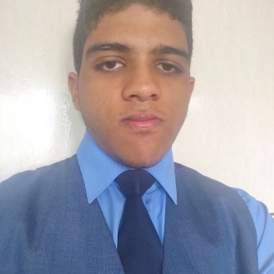

Veja o perfil do profissional do futuro.
Executor: Foco no resultado e na superação de obstáculos. Características: autoconfiança, competitividade, ousadia, determinação e proatividade.
Crítico: Foco na qualidade e precisão.
Características: curiosas, investigativas, observadoras, cuidadosas, organizadas e atentas aos detalhes.
Aprendizado: Incentivo constante para diferenciação de
perfil e de competências.
Crescimento: Oportunidades de promoção e de receber
novos desafios e responsabilidades.
Orientação para o alcance de metas objetivas e
foco na entrega final.
Feira Cultural | 08/2023 - 11/2023 (3 meses)
Competências/especialidades adquiridas: Organização.
Local: Guarulhos - Brasil
MostraTech 2025 | 11/2025 - 11/2025
Competências/especialidades adquiridas: Execução.
Local: Guarulhos - Brasil
MostraTech 2024 | 11/2024 - 11/2024
Competências/especialidades adquiridas: Execução.
Local: Guarulhos - Brasil
p>
1 EMI TI
Principal conhecimento adquirido: Análise de Dados
Nível: Técnico
Duração: 400.00
Instituição: ENIAC COLÉGIO E FACULDADE
Tecnologia da Informação (TI)
Principal conhecimento adquirido: A inteligência artificial está se tornando uma aliada importante na
criação de espaços mais eficientes e personalizados.
Nível: Técnico
Duração: 1200.00
Instituição: ENIAC